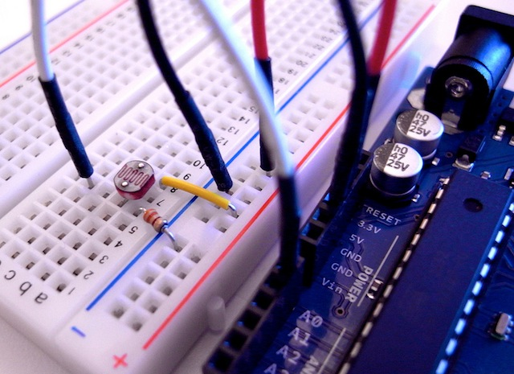

arduino_firmata
What is Firmata?
Firmata is a protocol to controll Arduino from software on PC.
INSTALL
% gem install arduino_firmata
REQUIREMENTS
- Ruby 1.8.7+ or 1.9.2+
- Arduino
-
Arduino Standard Firmata v2.2
- Arduino IDE -> [File] -> [Examples] -> [Firmata] -> [StandardFirmata]
Sample Code
- https://github.com/shokai/arduino_firmata/tree/master/samples
- Tweet temperature just 9 lines.
- Controll Arduino on Sinatra 20 lines.
Setup
Connect
require "rubygems"
require "arduino_firmata"
arduino = ArduinoFirmata.connect # use default arduino
arduino = ArduinoFirmata.connect "/dev/tty.usb-device-name"
arduino = ArduinoFirmata.connect "/dev/tty.usb-device-name", :bps => 57600
Board Version
puts "firmata version #{arduino.version}"
Close
arduino.close
I/O
Digital Write
on board Yellow LEDarduino.digital_write 13, true
arduino.digital_write 13, false
Digital Read
arduino.pin_mode 7, ArduinoFirmata::INPUT
puts arduino.digital_read 7 # => true/false
arduino.on :digital_read do |pin, status| # digital_read event
if pin == 7
puts "digital pin #{pin} changed : #{status}"
end
endAnalog Write (PWM)
0.upto(255) do |i|
arduino.analog_write 11, i # <= 0 ~ 255
sleep 0.01
end
Digital 11 PIN -> LED -> GND

Analog Read
puts arduino.analog_read 0 # => 0 ~ 1023
arduino.on :analog_read do |pin, value| # analog_read event
if pin == 0
puts "analog pin #{pin} changed : #{value}"
end
endGND & 5V -> CdS & 10kΩ -> Analog 0 PIN 
Servo Motor
loop do
angle = rand 180
puts "servo angle #{angle}"
arduino.servo_write 9, angle
sleep 1
end
VCC, GND and Digital 9 PIN -> Servo Motor
Sysex
- http://firmata.org/wiki/V2.1ProtocolDetails#Sysex_Message_Format
- https://github.com/shokai/arduino_firmata/tree/master/samples/sysex
Send
arduino.sysex 0x01, [13, 5, 2] # command, data_array
Receive Event
arduino.on :sysex do |command, data|
puts "command : #{command}"
puts "data : #{data.inspect}" # data_array
end
Block Style
ArduinoFirmata.connect do
puts "firmata version #{version}"
30.times do
an = analog_read 0
analog_write 11, an
sleep 0.01
end
end